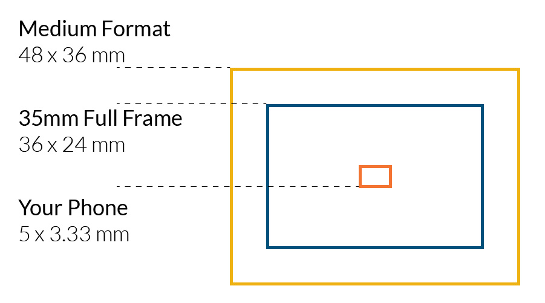
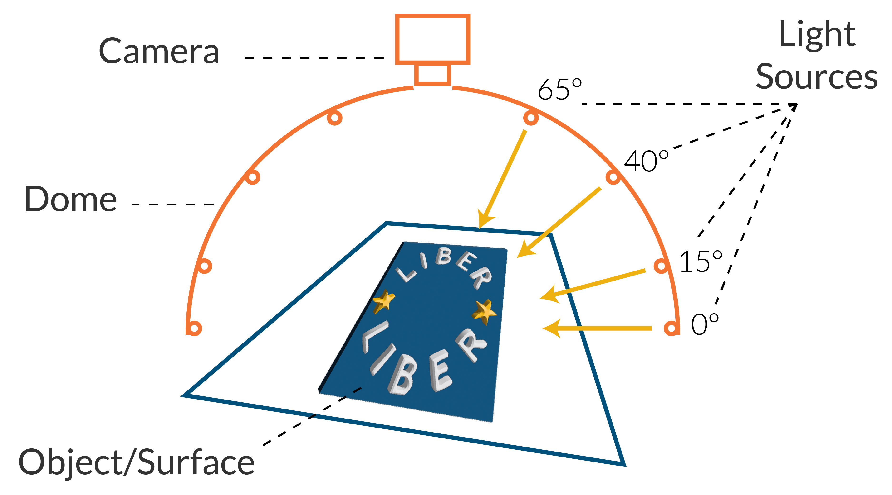

Digitisation: Imaging, 3D and RTI
![]()
“A quick guide to help navigate the terrific topic of digitisation.”
TBD, TBD
Introduction
Over recent decades research library collections, operations, and audiences have moved from a largely analogue to a mixed analogue/digital environment. So, it will come as no surprise that advances in digital imaging have put digitisation in the position of being one of the most prominent demonstrations of this digital shift. Cultural heritage institutions of all sizes are likely to have some level of digitisation and imaging workflows and standards in place, either through in-house imaging labs or outsourcing through mass digitisation projects like Google Books to keep up with this shift. Many seek to take advantage of uniqueness in their collection by exploiting advanced imaging methods such as 3D modelling, Multispectral Imaging and Reflectance Transformation Imaging (RTI).
Of course, now that almost everyone has a camera available to them via their phone, it may appear easy for anyone to digitise collection items quickly, or even make their own 3D model, but navigating this complex landscape of technologies, terminologies, methodologies, gadgets and gizmos can be quite daunting for anyone. Those working in cultural heritage institutions also need to consider not just how the technologies work, but how they can be employed within budget, integrated at scale into larger workflows, support preservation alongside access, and be deployed sensitively. This guide aims to help library professionals to understand some of the questions and considerations they need to keep in mind while exploring and having a play with some of these new advanced imaging methods for collection digitisation.
2D or Not 2D, that is the question?
Identifying the right imaging method for different objects, and then the specific technology or combination of them to use can be confusing, and is often restricted by what resources you might have available. Knowing and understanding why you are digitising something from the outset, and what it will be used for, will also inform the decision process, so spend some time thinking about that - the wrong choices can be costly and time consuming. That said, in my experience many of the technologies advance so quickly that whatever you choose, no matter how thoughtfully, will likely be out of date by the time you’ve finished - so my advice is to accept this inevitably, don’t let it stop you, start with a sound approach, do the best with what you can, and know who, and when, to ask for advice!
Here are brief introductions to some of the advanced imaging methods we have at our disposal:
High-Resolution 2D Imaging
Most imaging methods build on a foundation of high quality 2D imaging. You’ll have heard phone manufacturers boasting about how many megapixels their camera has. But this isn’t always an indicator of quality, there are lots of other factors, the more important factor being the size and quality of the imaging sensor. So while using your phone camera may seem a cost-effective and easy solution for digitising collection items, it is unlikely to provide the high-resolution and preservation quality you’re after long term. The guide ‘Remote Capture: Digitising Documentary Heritage in Challenging Locations’ explains this quite well in their chapter on Equipment and skills for digitising in the field. You can see some great examples that demonstrate why high-quality imaging is a must in my case-study.

3D Modelling
3D data can be generated through different methods and technologies. These include photogrammetry, which uses images to obtain accurate measurable information of real-world objects and the terrain, and LIDAR which stands for ‘light detection and ranging’ and is a remote sensing method that uses pulses of light to measure distances and angles as they bounce back into the sensor. The data produced from these methods can then be used to build 3D models of objects or the terrain. 3D models help a user build an understanding of the form of an object, and can even be useful in conveying book construction for example. It works well on most objects, but can run into difficulties with reflective materials like polished glass and metal. Check out some examples in the case-study.
3D models of cultural heritage objects can then be used in AR/VR/XR environments. You might have come across all three of these terms and been slightly confused as to what the difference is. Augmented reality (AR) is an experience where reality is enhanced in some way using technology. Virtual reality (VR) is usually an entirely simulated experience in which you are immersed. Extended reality (XR) is an umbrella term that encompasses AR, VR or even mixed reality (MR), in which both actual and virtual worlds are merged.
Multispectral Imaging
This is a method of examining an object under different wavelengths of light – you’ve probably heard of infrared and ultraviolet, but there’s a huge spectrum that can be applied in order to reveal underwriting or investigate faded text and even the structure of the medium, revealing things like paper manufacturing watermarks. Whilst multispectral images can be hard for the average user to interpret, specialists can use them to transcribe long lost texts. For an example of this, you can see a recently rediscovered Merlin Fragment in the IIIF viewer below, or check out the digital edition of the Codex Zacynthius.
RTI
Reflectance Transformation Imaging (RTI) is a technique that creates hyper-real digital images with which the viewer can interact. It creates texture mapping by capturing multiple images of the subject from a fixed point whilst the light source varies in position. This is really useful for revealing the textured detail in surfaces of objects such as coins, engravings or pressed plant material - there are some examples of a herbarium sheet in my case-study. This diagram shows a basic RTI set-up, you can learn more about the technique and process from the Cultural Heritage Imaging’s website about RTI.

Other Considerations
- Lighting is often as important, if not more so, than the camera you are using, so it pays to learn a bit about that too. For example, a camera sensor is more sensitive to colour temperature and contrast than the human eye. The guide Remote Capture: Digitising Documentary Heritage in Challenging Locations explains a bit more in their section about lighting and flash.
- Ethics & Cultural Sensitivities Another thing to remember when selecting and preparing to digitise collections is the impact of our own narrative into the process. What we choose to select, our interactions, and the choices we make for providing access to objects, become entwined and embedded through the process of digitisation, and this should be thought through as well. The Digital Preservation Coalition has published a useful guidance note ‘Exploring ethical considerations for providing access to digital heritage collections’, and there is also some interesting discussion in Fafinski’s article ‘Facsimile narratives: Researching the past in the age of digital reproduction’.
- Facsimile, surrogate, object or edition? Opinions often vary on how/what we consider digitised objects to be and what we call them. You may have come across the terms “digital surrogate”, “digital facsimile” or “digital edition” for example. The digitisation process can remove or reduce some aspects, but can add or increase others. Due to this, the outputs of digitisation are now more widely considered to constitute a distinct thing from their real-world original.
- Copyright and licensing is a complex issue, but an essential consideration when digitising anything. You might want to start by looking at the LIBER DS Topic Guide on Copyright.
- Hosting Your institution might have one or more hosting solutions on which you can store your digitisation and make it available over the web and integrate it into existing systems. If not, then IIIF might be worth exploring, and a great place to start is the LIBER DS Topic Guide on IIIF. But whilst regular image hosting options are common, more complex digital objects can be a challenge. If you are creating 3D models, RTI or other specialist imaging, you will need to consider a number of options. Many cultural institutions have been hosting their 3D models through a platform called Sketchfab, but at the time of writing, the platform has recently been absorbed into a bigger platform, and its future is in doubt, providing a good example of how challenging it can be relying on third party services. Other options to consider include MorphoSource, a data repository that is more focussed on research and academia, or tools such as Model-Viewer and A-Frame that can be used to build your own virtual experiences. The IIIF community are currently working on support for 3D objects, so keep an eye on developments there!
- Digital Preservation is also important to consider - digitisation can be expensive, so don’t risk losing your valuable assets. A great place to start is the Digital Preservation Coalition.
Relevance to the Library Sector (Case Studies/Use Cases)
One of the biggest benefits to digitising content is often thought of as one of access. Sharing things that have been locked away in our libraries and archives, sometimes for many hundreds of years, to anyone, anywhere in the world with an internet connection is a very powerful thing. This isn’t the only reason or advantage to digitisation - some might be surprising or even more compelling.
Acknowledgment that the act of digitisation is also an important and valuable part of the research process is steadily growing. For example, over the last few years in the UK, recognition amongst university and research institutions of initiatives such as the Technician Commitment and the Hidden Ref has been increasingly impactful.
Cambridge University Library
By way of a case study, I wanted to share some stories relating to digitisation here at Cambridge Digital Library. Hopefully these demonstrate just some of the potential and value of digitisation.
We are lucky here at Cambridge that a long history of larger scale digitisation projects means we have been able to steadily increase the amount of equipment, skills, and experience we have and the services we can offer researchers. But this activity is more than a service, we work in direct collaboration with researchers, curators, conservators, publishers and exhibitions teams to help them achieve the results they need.
Flat digitisation
At Cambridge, our focus is very much on delivering the highest possible quality results we can. This is good practice when thinking about the longevity of your outputs, digital preservations needs thinking about at every stage of course, but a major advantage of this approach is that the higher quality the result, the more likely you are to make new discoveries and learn new things about the objects in our care. We have many examples of things that have only been spotted because of the high quality imaging we produce. Take a look at some of the Benefits of Digitisation in this interactive story:
3D and other multidimensional media
Whilst we might normally expect the written word to occur on a page, the world is more complex than that and even paper isn’t as “flat” as you might expect. Some of the most ancient texts in our collections are Oracle Bones, that are about 3000 years old. They are objects that have undergone a process far more complex than simply marking a flat surface with a pen. They’re materiality is intrinsic to the meaning of the text on their surfaces. But even though something this ancient has been studied for hundreds of years, they are so fragile that most studies are undertaken from impressions of the text (a process which flattens the text for reading and reproduction on the printed page), so it is not often the object is taken out of its carefully constructed archival housing. It was not until the curator saw the 3D model of this oracle bone in the video below, that they noticed there was a surface of it on which there were markings that had never been spotted before!
So, as we can see, 3D modelling can facilitate deeper study and reduce the need to handle fragile objects. But 3D printing them can also be a great way to bring collections to life and enable increased handling via replicas. This is a great way to engage anyone with handling collection items, but can be a particularly pertinent way to bring them to life for people with visual impairments, as we can see in The tale of the ‘Old Horse’ for example:
But 3D models don’t work for everything. In another project we have been collaborating across the other collections at the University of Cambridge to experiment with digitally re-uniting the wide variety of collections relating to Charles Darwin that the University has split over various museums and archives. One particular challenge with this project was presented in the form of herbarium sheets. Plant specimens that Darwin collected on the Beagle Voyage, some of which are now extinct. Whilst the writing on the sheets is well captured by a flat digital image, the plant parts themselves have form and texture, an understanding of which cannot be perceived so well on a flatly lit image. We experimented with 3D modelling them, but ironically they are too flat – the processes involved in 3D modelling didn’t cope well with the flat paper surfaces. Whilst it would be possible to rectify this digitally, it would take a great deal of time, rendering the process extremely inefficient. So we are experimenting with RTI, which allows us to capture texture in a much more engaging way.
Viewing RTI files currently requires specific software, although developments are underway to facilitate the experience through a web browser. The video below demonstrates a few examples that showcase what the experience is like:
You might even find that occasionally people want to see inside something! CT Scanning certainly isn’t an everyday technique that we might associate with research libraries, but you never know. The CT scan shown in the video below is of a fish specimen collected by Charles Darwin on the Beagle Voyage nearly 200 years ago. Preserved in alcohol in a jar, it’s not very easy to inspect or study the real thing:
Hands-on activity and other self-guided tutorial(s)
If you’ve got half an hour and a colleague or friend to spare, why not take your first steps into a virtual world and have a go at making a 3D model.
The “Big Me, Little Me” exercise has been developed by the team at StoryFutures, and is a great way to start thinking about 3D modelling and the virtual world it creates.
!Warning! - You’ll probably end up wanting to spend longer!
:-) The question you always need to ask yourself though, is should you?
- Step 1: Download the Scaniverse App to your mobile device.
- Step 2: Scan your friend or colleague. Here are some tips:
- Move slowly and as steadily as possible - it also helps if your subject is comfortable and can stay as still as possible.
- Try to follow a regular pattern as you move around your subject. Moving in a spiral shape around them from top to bottom can work well.
- Pay extra attention to heads and faces - avoid starting or stopping with the face as this can result in a visible ‘seam’.
- Move slowly and as steadily as possible - it also helps if your subject is comfortable and can stay as still as possible.
- Step 3: Process your scan - this might take a few minutes, maybe have a cup of tea.
- Step 4: Once your scan is processed, click the “AR View” button. This allows you to play around with the scan in augmented reality, so you can adjust the scale and position. This is the fun bit - you can shrink the scan and get your colleague to adopt a funny pose with a mini version of themselves!
- Step 5: Now you can take a screenshot and send it round the team to make everyone smile!
Recommended Reading/Viewing
There’s loads out there to read-up on that covers everything from the very technical aspects and guidance to the more philosophical side of things - inspiration is everywhere and creative approaches have a habit of seeding into fruitful outcomes!
- Material Awareness : Exploring the Entanglement of Library Digitization and Digital Textual Scholarship. Martinez, Merisa. (2024). PhD dissertation. Högskolan i Borås.
- Why Do We Digitize? The Case for Slow Digitization. Prescott, Andrew and Hughes, Lorna. (2018). Archive Journal.
- A Field Guide to Digital Surrogates: Evaluating and Contextualizing a Rapidly Changing Resource. Stanford, Emma. (2020). In Kathryn Brown (ed.) ‘The Routledge Companion to Digital Humanities and Art History’ (1st ed.). Routledge. Pp 203-214.
- Digital humanities and digitised cultural heritage. Terras, Melissa. (2022). In J O’Sullivan (ed.), ‘The Bloomsbury Handbook to the Digital Humanities’ (1st ed.). Bloomsbury Handbooks, Bloomsbury Academic. pp. 255-266.
- Facsimile narratives: Researching the past in the age of digital reproduction. Fafinski, Mateusz. (2021). In ‘Digital Scholarship in the Humanities’, Vol. 37. No. 1, 2022.
Technical Guidance:
- Remote Capture: Digitising Documentary Heritage in Challenging Locations. Edited by Jody Butterworth, Andrew Pearson, Patrick Sutherland & Adam Farquhar. (2018). Open Book Publishers.
- Reflectance Transformation Imaging (RTI). Cultural Heritage Imaging.
- From Shelf to Europeana: Digitization Workflow Handbook. Europeana.
- Basic principles and tips for 3D digitisation of cultural heritage. Europeana (2020).
- Learning hub. Association for Historical & Fine Art Photography (AHFAP).
- Manual for the photography of 3D objects. Rijksmuseum (2017).
- Technical Guidelines for Digitizing Cultural Heritage Materials (3rd ed.). Federal Agencies Digital Guidelines Initiative (FADGI), (2023).
- The London Charter: For the Computer-Based Visualisation of Cultural Heritage. (2009).
- Highlight-Reflectance Transformation Imaging (H-RTI) for Cultural Heritage. Historic England (2018).
Finding Communities of Practice
As we all know, libraries are friendly places and often keen on collaborating. Why not reach out to some libraries with digitisation studios and see if you can go and visit them to learn a bit more about how they operate or what equipment they’re using first hand - it can really help to see a variety of different set-ups in person to start building up an idea of what might work for you. Or try and find a local workshop or summer school to attend that will give you some hands-on experience and the opportunity to meet others like you!